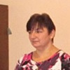

Дошкольное отделение школы № 1269
В 2015 году 11% первоклассников Школы № 1269 пришли из дошкольного отделения.
- 2-я Владимирская улица, 33А
Воспитатели
Воспитатели, которых чаще всего благодарят родители (отзывы и профили сотрудников взяты с официального сайта школы):|
Воспитатель
Смотрова Татьяна Ивановна
2 благодарности |
Воспитатель
Кирянина Людмила Владимировна
2 благодарности |

Воспитатель
Павлова Елена Ивановна
2 благодарности |
Воспитатель
Ермакова Марина Владимировна
1 благодарность |
|
Воспитатель
Никулкина Анастасия Станиславовна
1 благодарность |
Воспитатель
Бутюто Светлана Анатольевна
1 благодарность |
Отзывы
Данные собраны c официального сайта школы и через форму для отзывов.
Мы хотим сказать огромное спасибо нашим воспитателям Павловой Елене Ивановне и Киряниной Людмиле Владимировне за то, что были нашим детям другом и помощником, наставником и воспитателем. Каждый день, проведённый детьми в саду был увлекательным и интересным. Дети всегда ходили в сад с удовольствием. Спасибо воспитателям за развитие талантов у наших детей, за индивидуальный подход к каждому. Именно к Вам можно было обратиться за советом или за помощью в воспитании детей. Отдельное спасибо хочется сказать нашей нянечке Алиевой Хатире Рамисовне за помощь в организации порядка в группе. За то,что помогали во всём, поддерживали чистоту в группе.
Искренне благодарим Вас, Елена Ивановна, Людмила Владимировна, Хатира Рамисовна за внимательное и чуткое отношение к детям. Спасибо за проявленные заботу, терпение доброту, за создание в группе дружелюбной и тёплой атмосферы, благодаря которой дети считают детский сад своим вторым домом.За эти годы дети Вам по настоящему стали родными. Успехов Вам, здоровья и терпения в Вашем нелёгком, но нужном труде.
Спасибо Вам огромное!!!!!
С Уважением, родители группы №4.
Искренне благодарим Вас, Елена Ивановна, Людмила Владимировна, Хатира Рамисовна за внимательное и чуткое отношение к детям. Спасибо за проявленные заботу, терпение доброту, за создание в группе дружелюбной и тёплой атмосферы, благодаря которой дети считают детский сад своим вторым домом.За эти годы дети Вам по настоящему стали родными. Успехов Вам, здоровья и терпения в Вашем нелёгком, но нужном труде.
Спасибо Вам огромное!!!!!
С Уважением, родители группы №4.
20 мая 2016 года в детском саду №1269 состоялся Выпускной 5-й группы "Непоседы".
Закончился детсадовский возраст, и малыши собираются в школу…
Хочется поблагодарить наших воспитателей: Анастасию Станиславовну и Марину Владимировну за компетентность, педагогический талант, душевную щедрость, за создание теплой обстановки в группе, за любовь, которую Вы дарили нашим детишкам, за то, что помогали им чувствовать себя в детском саду как дома. Спасибо Вам за Ваше терпение, доброту.
Низкий поклон и огромная благодарность Вам, няням, музыкальному руководителю за вашу способность любить детей и прививать им тягу к прекрасному, умение любить мир и окружающих людей.
Желаем Вам крепкого здоровья, счастья, профессиональных успехов!
Закончился детсадовский возраст, и малыши собираются в школу…
Хочется поблагодарить наших воспитателей: Анастасию Станиславовну и Марину Владимировну за компетентность, педагогический талант, душевную щедрость, за создание теплой обстановки в группе, за любовь, которую Вы дарили нашим детишкам, за то, что помогали им чувствовать себя в детском саду как дома. Спасибо Вам за Ваше терпение, доброту.
Низкий поклон и огромная благодарность Вам, няням, музыкальному руководителю за вашу способность любить детей и прививать им тягу к прекрасному, умение любить мир и окружающих людей.
Желаем Вам крепкого здоровья, счастья, профессиональных успехов!
В лице родительского комитета группы номер 6 детского сада 1910, хотим выразить благодарность педагогическому составу группы, а именно воспитателю Смотровой Татьяне Ивановне и Бутюто Светлане Анатольевне, нянечке Моревой Татьяне Ивановне за их хорошо выполняемую работу. Дети быстро справились с адаптационным периодом, дети всегда чистые сухие и веселые и накормленные.
Отдельно хотелось бы сказать спасибо Смотровой Татьяне Ивановне за вклад в творческую жизнь наших детей, за ее способность найти индивидуальный подход к каждому ребенку и любовь ко всем детям группы.
Спасибо вам за заботу о наших детях и за помощь в их воспитании.
Прошу принять благодарность от Болотиной А.В., Киселовой О.С., Кандрашевой Л.И., Серебряковой Ю.Н., Климовой Н.А.
Отдельно хотелось бы сказать спасибо Смотровой Татьяне Ивановне за вклад в творческую жизнь наших детей, за ее способность найти индивидуальный подход к каждому ребенку и любовь ко всем детям группы.
Спасибо вам за заботу о наших детях и за помощь в их воспитании.
Прошу принять благодарность от Болотиной А.В., Киселовой О.С., Кандрашевой Л.И., Серебряковой Ю.Н., Климовой Н.А.
Курнышева Екатерина Владимировна
Директор
+7 495 305-70-20
Если вы нашли ошибку или неточность, пожалуйста, сообщите нам об этом.
Ученик, выпускник или родитель? Оставьте отзыв о детском саде.